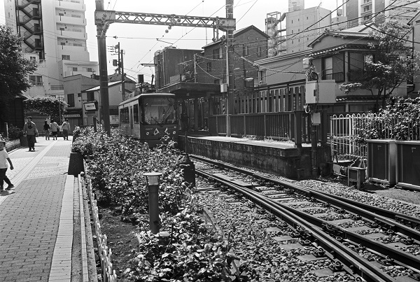
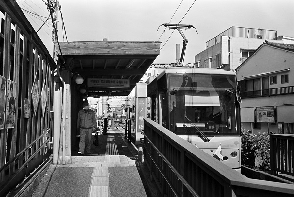
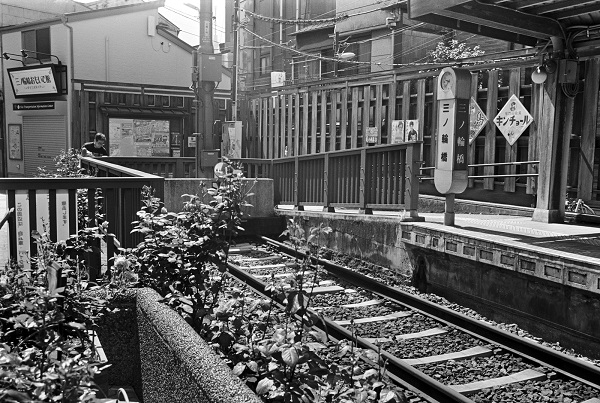
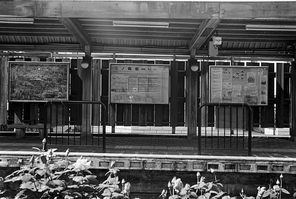
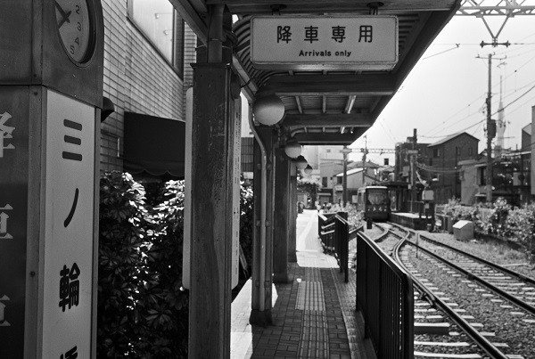
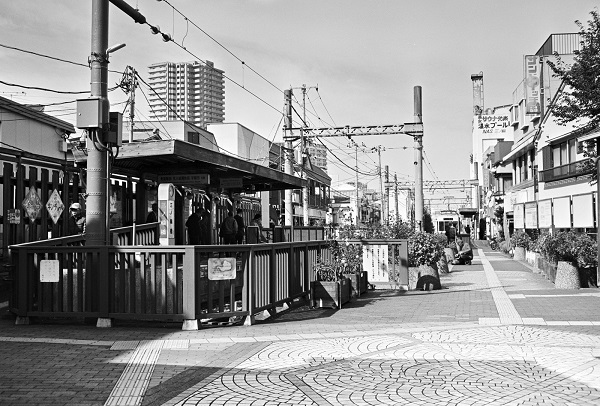
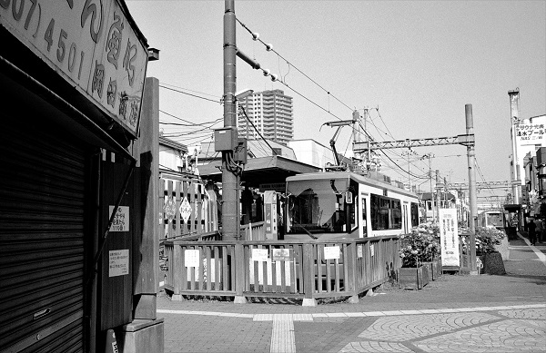

SA01_都営荒川線
SA_三ノ輪橋駅 Minowa Bashi
都営荒川線 →→荒川一中前駅

2019/5/3 ﾐﾉﾙﾀCLE＋ｽﾞﾐｸﾛﾝ35mm ｱｸﾛｽ

2019/5/3 ﾐﾉﾙﾀCLE＋ｽﾞﾐｸﾛﾝ35mm ｱｸﾛｽ

2019/5/3 ﾐﾉﾙﾀCLE＋ｽﾞﾐｸﾛﾝ35mm ｱｸﾛｽ

2019/5/3 ﾐﾉﾙﾀCLE＋ｽﾞﾐｸﾛﾝ35mm ｱｸﾛｽ

2019/5/3 ﾐﾉﾙﾀCLE＋ｽﾞﾐｸﾛﾝ35mm ｱｸﾛｽ

2017/10/31

2011/4/20
戻る ﾎｰﾑ